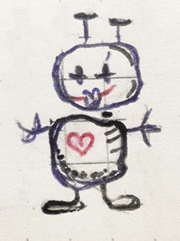
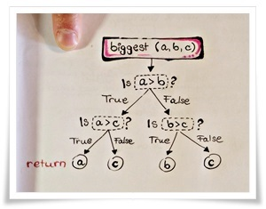

April 14th, 2015: How to think like a programmer
I am going to love programming!
There are five aspects of the way in which programmers think:
-
procedural thinking
..means giving unambiguous instructions to the computer.
It also means approaching the solution of a problem step by step.
Procedural thinking is based on..
-
technolochigal empathy,
which is basically the assumption that computers are stupid :b
-
abstract thinking
..means finding generality amongst things that are seemingly different.
-
systems thinking
..is breaking a problem down into smaller pieces, so it's similar to procedural thinking (there - I found a generality!)
-
debugging
..is the process of finding and fixing mistakes. You have to ask yourself the following questions:
- where's the bug?
- what has caused the bug?
- how can I fix it?
...now I can't wait to learn more of that stuff!!
♥
April 16th, 2015: HTML and the world wide web
fundamentals of front end web development
I would like to become a front end web developer. So what basics do I have to learn?
-
I have to understand what the world wide web is!
The world wide web is an incredibly huge collection of text files, images, videos, music and links.
-
I have to understand how the world wide web works!
Web browsers make requests to servers. The servers respond with files that are then displayed by the browsers. All the information is transmitted via the internet.
-
I have to understand the significance of HTML!
HTML can be considered the thread that links all the elements. It is the main type of document on the web.
-
I have to understand the underlying structure of HTML!
As a front end developer I have to gain a certain amount of technological empathy. I need this empathy to be able to think of an HTML page as an arrangement of rectangles, or, to put it more figuratively, as a nesting of boxes.
Every part of an HTML document lies within an invisible box, where smaller boxes are within even smaller ones. The main box that contains all the other ones is the website. A box is created by the div element. Here are three examples why this strucutre is so convenient:
- You can style the content of a div element with CSS.
- You can create a link within your page that sends you to another part of the page without loading again.
- 3. Repetition of code can lead to mistakes. If you want to do the same thing several times ( make use of a class instead!
- If I want to make webpages that look nice I have to know about CSS!
If HTML is an arrangement of boxes within boxes, CSS is the style (shape, size, color..) of those boxes. Here is an
example. You can change the code and see the results!
This might become an exciting project :D
♥
April 17th, 2015: Properties of HTML boxes
Am I still going to love programming?
Yesterday I learned that a web page is like an arrangement of rectangular boxes. Today I learned that each box consists of..
- a margin
- a border
- a padding
- a content
You can format your page by changing size, color and other attributes of those boxes.
Click
this link to see the box model!
HTML and CSS have a tree-like or cascading structure. So, instead of thinking about boxes within boxes, you can actually compare the structure to a tree, its nodes being connected by branches. If you specify certain rules for an element, they will apply to all the other elements that are subordinate to it (i.e. that are growing out of it).
You can actually see the tree-like structure if you open the developer-tools of a web page. By clicking on a sideways triangle, you will see all the elements that are included in the element you clicked on.
This sounds complicated but once you've tried it out yourself it's quite obvious.
Be careful with your code! Because of the cascading structure it is important to make use of indentation when writing HTML code, or you might easily lose control of you work.
Puh, this is a bit
complicated, but I think I'm still going to
♥ programming :)
April 20th, 2015: Learning theory
why this project is so important
Some people claim that programming is the most effective way of learning because it includes all the features that are required for a learning process to be successful. Among these are..
-
Creativity: As a programmer you don't just read new theory - you apply it immediately. And there is always something new to find out, so your learning process is never going to end. Personally, I find the list of CSS colors really inspiring :D
-
Personal motivation: By creating your own web page you apply the new techniques to something that really affects you.
-
Immediate feedback: Especially when using tools like codepen.io
developers can see the results of changes on their page immediately. This is an easy and fun way to improve your work until it's perfect!
♥
April 22nd, 2015: The nature of universal machines
computers can or can't do anything

-
Compters are universal machines. If you give them instructions they understand you can make them do anything you want. But unlike human beings, they don't have any common sense. Thus, they are not capable of making their own decisions. That is why you need to talk to them in a precise and unambiguous way..
-
A program is the ♥ of a computer. It is a precise sequence of steps that gives the computer instructions on what to do. Without a program, a computer won't do anything at all. I need to learn procedural thinking and technological empathy in order to be able to write code that can be executed by a computer.
-
A programming language is a language that is especially designed to be understood by a computer. Like natural languages, programming languages follow a certain grammar. But using a programming languages is different from speaking natural languages in that you always have to abide by the grammatical rules. You can never use ungrammatical sentences in programming languages. As with ambiguity, a computer won't be able to understand them.
April 24th, 2015: Variables and strings
Let's get down to business..
The concept of a variable is rather difficult to explain for a beginner in programming. Basically, I would say it's a name that is given to a value. Values are assigned to variables with the = sign.But don't confuse that function of the = sign with its mathematical meaning!
x = 14 doesn't mean x equals 14. It means that the value 14 is assigned to the variable x.
You can always change the value that is stored in a variable with the = sign. Names make more sense to humans than numbers or single letters like x. Therefore, you should choose variable names that make your code understandable, e.g.
age = 32
or
speed_of_light = 299792458 #meters per second
A string is an arrangement of letters (a word or a sentence or just a single letter), that can also be stored in a variable, e.g.
name = 'kerry'
Indexing strings can be very useful if you want to work with subsequences of strings. The following code example will give me the position of the first occurrence of the word string in the sentence below.
sentence = 'Every string starts with an empty string'
print sentence.find('string')
# Here, the output would be 6, as 'string' starts at position 6
# Programmers always start counting with 0 :D
Note that the + sign also has a different meaning in programming. With the + sign you can
concatenate strings, so that
'k'+'e'+'r'+'r'+'y' => 'kerry'
♥
April 27th, 2015: Functions
How to get things done..
A function is a procedure that is responsible for getting one particular thing done in a program. It is fed input that is then processed and returns some output that can then be used for other things (e.g. given to another function). To
call a function means to use it: You call a function with the value x if x is the input that is given to a function to be progessed.
A function needs to be defined before you can use it. Here is a Python code example for a function definition that multiplies two numbers and returns the result:
def mult(x, y):
return x * y
Now as the function is defined, it can be called, as in the following example:
print mult(236, 88)
You can also use functions with strings as in the following code example:
def fist_letter(s):
return s[ :1]
print first_letter('kerry')
#Here, the output would be k
This is cool.
I ♥ programming :)
April 30th, 2015: Control flow & loops
if and while statements..
The process of Procedural Thinking involves a lot of decision making and repetition.
If you want the computer to do something in one case and something else in another case, this has to do with decision making and you can use if statements for it. The syntax is:
if:
<block> #executed if test_expression is True
else:
<block> #executed if test_expression is False
True and
False are
Boolean Values. They are very important in programming because
computers are so stupid that, unlike humans, they can't think in a more indefinite way.
They are so stupid they even need those exact instructions to find the biggest out of three numbers :b
Below you see the diagram for the
biggest task and the Python code that goes with it..

def biggest(a, b, c):
if a > b:
if a > c:
return a
else:
return c
else:
if b > c:
return b
else:
return c
print biggest(10, 4, 83)
Likewise, you make use of Boolean values, if you want the computer to do something over and over again. You tell the computer:
Fulfill the task, while something is true. This function is called while loop. See the code example below..
def count_from_here_to_sixteen(number):
while(number < 17):
print number
number = number + 1
print count_from_here_to_sixteen(8)
cf.
for-loops
May 5th, 2015: Debugging
You only learn from your mistakes..
It is impossible to always get the syntax of your code right, so in case your code crashes, consider the following strategies...
- the last line of your traceback tells you what went wrong. If it doesn't make sense to you -> google it!
- comment your code out and try to modify it step by step
- add print statements to each line of you code, so you can see where it stops behaving correctly
- don't delete old versions, even if they dont't work. Maybe one day you will meet somebody who can tell you why..
- have faith in what you do! ♥
May 11th, 2015: Lists sequences of anything
While
strings are sequences of characters,
lists can be sequences of various kinds of input (characters, strings, numbers, even other lists). The syntax is as follows:
definition of a list:
<name of list> = [<expression>, <expression>, <expression> ..]
# Note that string elements have to be encosed by quote signs!
#example list of numbers
my_numbers = [10, 4, 83]
#example list of mixed input
mixed_list = ['kerry', 10, 4, 83]
compare the following operations and their output:
- selection out of a string:
s = yabba
s[2:4] -> 'bb'
- selection out of a list
p = ['y', 'a', 'b', 'b', 'a']
p[2:4] -> ['b', 'b']
Keep in mind that lists support mutation while strings don't. The concept of mutation is rather difficult to explain so if you want to learn more about it, watch this Udacity video :)
May 12th, 2015: Operations on lists Handle with care!
Lists support the following
operations:
- append
..is a method that works on lists like find on strings.
..modifies a list by adding a new element
..the syntax is <list>.append(<element>)
- +
..concatenation of lists
..produces a new list, while the old ones still exist!
..for example [7, 8] + [9, 10] -> [7, 8, 9, 10]
- +=
..not that easy to explain, but quite easy to understand with an example:
my_list = [4, 5, 6, 7]
my_other_list = [8, 9]
my_list += my_other_list
#the content of my_list is now[4, 5, 6, 7, 8, 9]
#you could say it's an
append-loop appending the elements of the second list to the first one :)
- len
..the syntax is len(<list>)
..the output is the number of elements within the list
..careful! It counts the outer elements:
li = [[4, 5], 6, [7, 8]]
len(li) -> 3
-
loops on lists: a perfect match ♥
the syntax is..
for <name> in <list>:
<block>
#for each element in the list, the value is assigned to name and the block is executed
#that means it goes through all the elements, then stops -> no stopping condition needed!
cf. while-loops